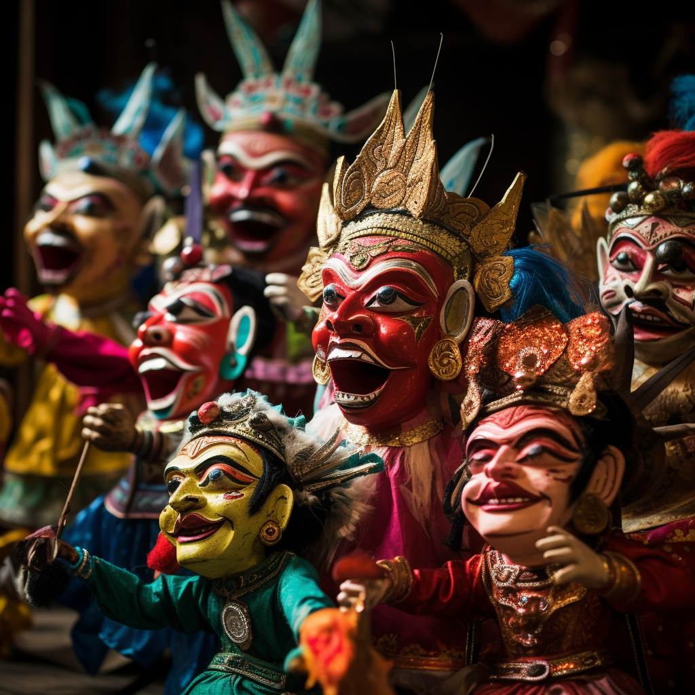

Shadow Puppets of Cirebon
Behold the vivid display of Cirebon wayang golek puppets, skillfully carved wooden marionettes that bring to life the diverse characters from Indonesian folklore and royal legends. The puppeteers maneuver these masterpieces with finesse, enacting captivating stories that have been passed down through generations. With lavish costumes and expressive movements, each puppet embodies the cultural heritage and artistic finesse that makes Cirebon's wayang golek a cherished form of entertainment and storytelling.